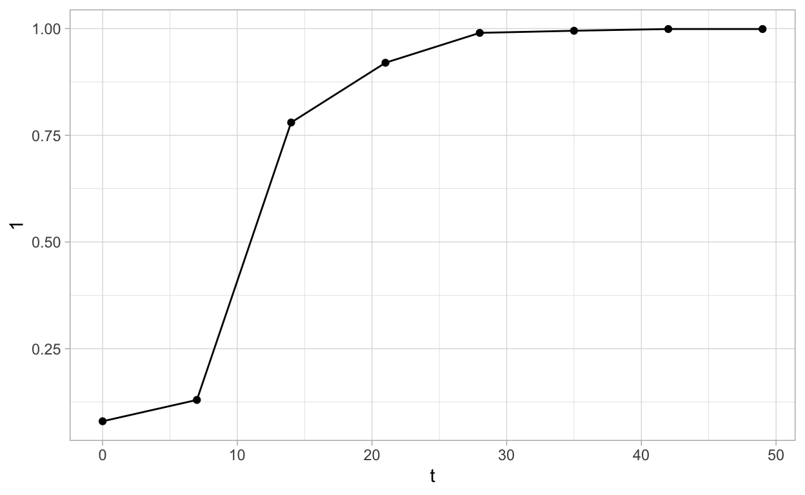

Epifitter is a very young package, targeting students and researchers dealing with simulated or empirically-derived data collected from surveys or experiments. It provides a set of tools for aiding in the visualization and description of DPCs as well as fitting and comparing epidemic models and simulating epidemic data.
Inevitably, pathogens spread throughout plant populations - some rapidly and more effectively when crops are intensively grown and man fails to control the situation. Even more so, when Mother Nature is very kind to the pathogen with the provision of the right meteorological conditions for epidemic onset, development and spread.
The progress of epidemics over time, described by disease progress curves (DPCs), is central in the field of plant disease epidemiology and has roots with its birth as a discipline during the early 1960’s. In fact, JE Vanderplank and other important scientists who followed a couple decades thereafter provided and shaped the tools that we have available for the study of the temporal progress of epidemics.
The subject is broad and can be complex, but relatively simple approaches may provide sufficient and important knowledge and tools for making inferences and testing hypotheses, depending on the question and scale of the application. When dealing with data collected at the population level (disease intensity in a group of individuals), the fit of simple two-parameter population dynamics models (e.g. Gompertz, logistic, monomolecular) is an effective way to understand, compare and predict epidemics.
These population growth mathematical models produce curves of different shapes, depending on their mathematical formulation. The equations provide a good fit to actual data collected in field populations of both monocyclic and polycyclic epidemics. The mathematics behind model fitting is straightforward and can be done using linear regression as far as the original data is transformed to linearize the pattern of the curve. Alternatively, non-linear approaches can also be used, but require computational resources.
During my journey teaching a graduate course in plant disease epidemiology since late 2007 I have used different approaches when teaching the fitting of models to DPC data. In the beginning, I made use of SAS codes, a DOS-based software and a spreadsheet. In 2014, I became an R and RStudio user and since then never looked back and abandoned all other software. I was trying to use only R for teaching and analysing epidemic data, which was quite possible for most, but not all, my epidemiological analyses at the time.
I have been writing my teaching notes in R and improving (as well as shortening!) my codes each year since. In 2018, my MSc student, Kaique Alves, started to program in R after he joined my lab and attended my epidemiology class. I was providing the codes for the class and, at some point when explaining an exercise on model fitting. During thatt course, I challenged Kaique to implement functions for automating the process of model fitting, selection and plotting. One year after Kaique completed the course, epifitter was born and it took a few more months to be delivered on GitHub and finally on CRAN in October 2020.
Epifitter is a very young package, targeting students and researchers dealing with simulated or empirically-derived data collected from surveys or experiments. It provides a set of tools for aiding in the visualization and description of DPCs as well as fitting and comparing epidemic models and simulating epidemic data. The models fitted to data are the “classic” population dynamics models (e.g. Gompertz, logistic, monomolecular) using both the data linearization and the non-linear approaches for both single or multiple epidemics. Making this package useful for both research and teaching purposes.
As of March the 3rd, the package has been downloaded 2,321 times (~600 downloads/month). Recently, I used epifitter in my graduate (online inter-institutional) epidemiology class with great success. The few functions optimized to simplify model fitting and selection shorten the learning curve because students need to learn just a few R functions compared with my original codes. This is also valid for visualizing model results. Additionally, we have used the package in ongoing research in the lab that deals with disease progress data. The chapter on model fitting of my "R4 Plant Disease Epidemiology’’ book (which is in the making) is based solely on epifitter. Finally, it has also been used in a vignette of the epicrop package and other research projects associated with the use of the latter package to calculate area under the disease progress curve (audpc).
The plan is to keep maintaining and expanding by creating a few other functions. We are gathering information for developing functions for comparing epidemic parameters obtained from epidemic data coming from different experimental designs, such as randomized blocks design. Furthermore, we plan to create functions to fit disease gradient models, add datasets and expand the documentation (via blog posts and screencast tutorials) to facilitate the understanding of package use and provide more examples.
epifitter can be downloaded from CRAN and its development version from GitHub.
CRAN: <https://cran.r-project.org/web/packages/epifitter/index.html>
GH: <https://github.com/AlvesKS/epifitter>
Package documentation: https://alvesks.github.io/epifitter/
R4PDE: <https://emdelponte.github.io/epidemiology-R/fitting-models.html>
Authors
Kaique dos Santos Alves
Emerson Medeiros Del Ponte
Create the pepper dataset available from the book “The Study of Plant Disease Epidemics” Madden, Hughes, and van den Bosch (2017) chapter 4, page 93.
Plot curve 1
ggplot(pepper, aes(t, `1`))+
geom_point()+
geom_line()+
theme_light()

Using data linearization approach with the fit_lin() function
epi1 <- fit_lin(
time = pepper$t,
y = pepper$`1`
)
The models are ranked from highest to lowest CCC. The epi1$Stas_all give the complete results.
epi1$Stats
CCC r_squared RSE
Gompertz 0.9848 0.9700 0.5911
Monomolecular 0.9838 0.9681 0.5432
Logistic 0.9782 0.9572 0.8236
Exponential 0.7839 0.6447 0.6705Fit a non-linear regression model to one epidemic at a time.
epi2 <- fit_nlin(
time = pepper$t,
y = pepper$`1`,
starting_par = list(y0 = 0.001, r = 0.03),
maxiter = 1024
)
epi2$Stats
CCC r_squared RSE
Gompertz 0.9963 0.9956 0.0381
Logistic 0.9958 0.9939 0.0403
Monomolecular 0.9337 0.8883 0.1478
Exponential 0.7161 0.5903 0.2770AUDPC(time = pepper$t, y = pepper$`1`, y_proportion = TRUE)
[1] 37.4745AUDPS(time = pepper$t, y = pepper$`1`, y_proportion = TRUE)
[1] 41.251